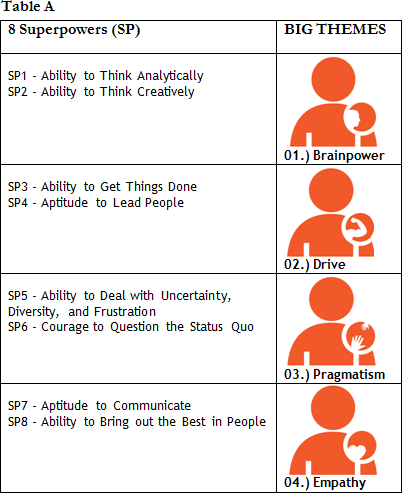
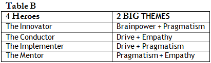

Hey. Packages submitted.
Unbelievable: all essays and letters submitted. I even had a free weekend.
Great job so far and a deserved break, indeed. More work is about to come, though; invitations to interviews should hit your inbox very soon.
Let’s hope so. I will be glad to keep working if they do come my way. And I want to be well prepared. The interview is a screening process between applicants who look promising on paper, right?
That’s right. And you should know you’re almost there. All the effort applied to your essays written every week since March will continue to pay off. You will revisit your 8 STORIES for evidence that you’re the one that they want. Of course, there is a lot you can do to run this final sprint.
Let’s do it, then.
You will be invited to interview with either alumni or admissions committee member. Check the 25 most asked questions (and their variations) - 25-MBA Question Interview Matrix . Like our Heroes in the past, you will learn how to answer these 25 questions.
Does every school ask those 25 questions in a single interview? That is a lot, I believe.
Every school has its preferences in the way to assess its applicants. However, every applicant must be prepared to answer this 25-Question Interview Matrix. We will soon see how to handle the specific questions for each school. First, you have to know the basics.
Ok, Megaron, here is a doubt: in the interviews, will I have something else other than the Q&A’s?
Sometimes the interviewer is required to evaluate your power of argumentation.
What do you mean by that?
At HBS for example, in the middle of the interview, he/she can get you involved in a discussion. Here are samples of it in the past three years:
- Can you explain me a little more about the private education market in Brazil?
- Brazil and China are so different and apart. How would you do to bring the two regions together?
- How do you see Amazon breaking into your country?
- What is the scenario for the internet market in Brazil?
Oh boy, that has nothing to do with my application.
Exactly; they are verifying your capacity to engage in an oral debate in a convincing way.
It is like a question from the SPEAKING section of the TOEFL.
Right. Not all interviews go like that. Perhaps, when there is a “yellow flag” in the application – the interviewer is attempting to evaluate this element – “is this applicant prepared to interact with others in debates during the program?”
I have heard that some schools conduct “blind interviews.”
Yeah, in this format, the inter¬viewer will have access only to your résumé. He will not have prior knowledge of your application. The interviewer will try to get a sense of your candidacy using the résumé as an outline for the dialogue.
It is a lot more difficult than if he had my whole package in hands.
I agree. What is aggravating here is that a “blind interview” is often with a school alumnus/alumna, generally with little experience.
When the AdCom members conduct the interview, they have access to the applicant’s package, I guess…
Yes, most of the time, they do. We will discuss this when we talk about each interview process.
What about the on-campus interviews?
It depends on the school. On-campus interviews are usually conducted by AdCom, but it is not rare that a trained second-year student conducts interview.
Is there a lot of difference between on-campus and off-campus interviews?
Naturally, the AdCom will tell you that there is no difference, after all schools acknowledge that scheduling or budgetary constraints might prevent an applicant from traveling to the campus.
And are these interviews with alumni?
Most schools maintain an extensive network of alumni inter¬viewers available to conduct interviews. If the school does not have alumni in a certain area, the staff will conduct phone interviews instead.
In the end, however, you have not answered my question: is there a lot of difference between on-campus and off-campus interviews?
I would rather repeat the official statement: it makes no difference. Sometimes, because the interviewer is Brazilian, he or she will know better about your employer or about the real difficulty succeeding in a given local industry.
But I thought the admissions officers were well acquainted with the Brazilian reality.
Yes, they are paid to know the reality of the Brazilian applicants. Every year they come here and do research and obtain information with alumni.
Which schools send their admissions officers to Sao Paulo?
In 2013, HBS, Wharton, MIT Sloan, and Tuck sent representatives to run interviews in hotel in the city.
What did the people who do not live in Sao Paulo do?
They were invited to come over or asked to do a phone/Skype interview.
What if the applicant is willing to come?
There is some flexibility.
I would not like to have an interview by phone or via Skype.
Sometimes, they will give you no choice.
How about the chances of being invited?
It depends on the school. Kellogg invites 100% of the applicants HBS, approximately 20%; Stanford even less. We will discuss this later.
Hum… And I heard that most interviews last no longer than half an hour, forty minutes max.
Indeed, when the interview is done by an AdCom member, it never lasts more than forty minutes; on the other hand, we know some interviews have taken 2 hours.
Wow.
The task is challenging indeed. You have to be concise yet persuasive in your sale. In general, interviews comprise 3 parts: (i.) some icebreaking introduction; (ii.) between 7 and 15 questions; and (iii) your turn to ask questions.
From what I heard, at Kellogg, for instance, the interview is mandatory while other schools send invitations to selected applicants. I was also told that INSEAD holds two sessions with different interviewers.
All of the information you provided is correct. I’m glad you’ve raised those differences. Recently, there has been even more significant change. The most radical comes from Wharton. Last year, for the first time, applicants in groups of six were invited to discuss a real business case and asked to find a solution together. You can read about these changes (Harvard shakes up its MBA admissions and Wharton's New Take on MBA Admissions).
The changes by Wharton and HBS are quite interesting.
If you have no time to read those articles, here is essentially, what you should know: HBS has added an extra assignment for the applicants who are invited to the interview. Once they have interviewed, they will have 24 hours to write an essay (Written Reflection) and, in 400 words, write that they were not able to say during the interview. If you are invited to interview with Wharton, you will participate in a team-based discussion with 5-6 other applicants. You will interact with them, discussing real-world business scenarios. Your discussion will have a prompt and a purpose and together you will work towards a tangible outcome. There will be time allotted for a short individual talk with one AdCom member during the interview.
All right, I’ll read that, but I’m getting anxious here. What is the main challenge in an interview?
It’s all about having your interviewer capture the right information with the right emphasis at the right time.
I have to know HOW to insert my message in interviewee’s brain.
Nicholas, before knowing HOW to insert your message in the interviewer’s brain, I think it is more important to revisit the WHAT (WHAT you must say). An applicant’s main mistake at this moment is to worry exclusively about the HOW’s rather than the WHY’s.
I see.
Thus, I propose breaking our chat into two parts. First, we will talk about the WHAT’s. Then, in the second part, we will discuss the HOW’s.
Deal. Let’s go to the WHAT’s. What is an applicant’s biggest mistake here?
Part 1: WHAT
Simple: applicants’ biggest mistake is to do their BRAINSTORMING in front of their interviewer. They start wondering in the middle of their answers.
I see this a lot when I recruit the newcomers to my employer.
The applicant must wonder at home. In front of the interviewer, the applicant must know exactly what he is selling. Improvising makes no sense. After all, every question in an interview is quite predictable.
The Heroes made a good sale in the 25 questions. What is the secret?
First, I must say that those who have been preparing and reflecting upon their values are better prepared to offer a perfect SYNTHESIS to the interviewer. As I said, ANALYSES (= BRAINSTORMING) are history at this point; they should have done at home and since March. Observe how the Heroes did the trick. Did you manage to identify a pattern to the various answers?
Regardless of the question, the Heroes seem to insist on the same point. They do not try to show that they master the 8 Super powers. Oh, right, I also noticed their concern about not sounding like robots. They always appeal to emotion.
Yes, COHERENCE and EMOTIONAL APPEAL continue to be, more than ever, the applicant’s #1 concern. We’ve known that since Km 1, right?
Any tip besides the ones we have been considering since Km 1? Now, with the challenge of answering those 25 questions, I agree that the essays are a much easier task.
Yes, this SYNTHESIS is a challenge in the interview, a much harder challenge than just write 2-3 predefined essays.
You have already mentioned that the interview is the most difficult part of the entire MBA application process. Concretely, though, do you have a suggestion? Can you tell me what else to do besides what we have seen since Km 1?
Yes, as I told you, before you focus on HOW, you must worry about WHAT. My suggestion is try to answer the several questions proposed based on TWO BIG THEMES.
TWO BIG THEMES? That is news. You always mentioned (1. THESIS) - my post-MBA career; (2. THREE PIECES of EVIDENCE) 3 STORIES that bring sound evidence to support my career IDEA.
No doubt, knowing how to defend your career THESIS by telling 3 STORIES is a fundamental exercise and, I would say, a basic exercise that every applicant should master. During the interview, however, when the applicant ends up answering 15-20 questions in only 45 minutes, I think it is important to know another framework.
Why another framework?
It is difficult for the student to reveal (1.) COHERENCE; (2.) EMOTIONAL APPEAL in an interview with as many as 20 questions when he only knows how to answer his career THESIS and tell 3 STORIES. We need a new framework for first, answer the questions at home and then, know how to do the same at the interviewer’s presence.
From what I have seen, I will be asked for much more than my 3 STORIES. Does that mean I must forget everything we have so far done?
No, not at all; you have been invited to interview because you have done a great SYNTHESIS. The issue at hand now is that the school’s interview process is more sophisticated than that of writing 2-3 essays. You were able to put together your essays, so you are prepared to answer the 25 questions.
Ok, but what do you mean by “controlling 2 BIG THEMES”?
I will explain, but initially, let’s revisit the 8 Superpowers. Observe Table A. Notice that I put together SP1 and SP2 (Brainpower); SP3 and SP4 (Drive); SP5 and SP6 (Pragmatism); SP7 and SP8 (Empathy).

I had already noticed that those 4 PAIRS (SP1-SP2; SP3-SP4; SP5-SP26 SP7-SP8) were, in a way or another, connected.
Yes, in several essays that I read, I noticed many times the difficulty sorting out the Superpowers. This is a much simpler framework.
But what is the big idea?
During the interview, in order to ease your SYNTHESIS, instead of trying to put into context all the questions based on your 3 Superpowers and your Post-MBA plan, you must remember that you must know well the 2 BIG THEMES in the above table.
Sorry, I am lost.
Ok, let me try to explain. Observe Table B below, now with the 4 Superheroes.

It looks clearer now. Let’s see if I really understood it. During the interview, instead of claiming, “I am a Innovator, I have Superpowers SP1-SP2-SP6”; I will say, “I am a Innovator, I have Brainpower & Pragmatism”, is that it? It does not change much, I guess.
You’re right. It does not change that much. You will still say that you have Superpowers SP1-SP2-SP6, but it is more difficult, for instance, to answer, “Who is your role model” if you think exclusively about your Superpowers.
When I answer about a “role model”, as a typical Scientist, I must think about a person who has “Brainpower + Pragmatism”, is that it?
Exactly. It gets easier when you do your brainstorming at home (“NEVER in the presence of your interviewer”). Students can more easily structure their answers in an interview when they think of a BINOMIAL (2 BIG THEMES) than of a TRINOMIAL.
That is not only it, Megaron. I also believe that the interviewer will have a hard time capturing a more complex message. Now that you said that, I can see that in their answers, the Heroes always try to sell a BINOMIAL (2 BIG THEMES).
That’s correct, Nicholas. In the end, it is all about your ability to control your BINOMIAL (2 BIG THEMES).
Should I practice this framework for all 25 questions?
Yes, you should do the same, that is, control your BINOMIAL (2 BIG THEMES) for each of those 25 questions. You challenge is to think all 25 questions following this framework.
Tough task, huh? If I am a William (The Implementer), when I have to answer “Suggest me a movie/book for my weekend”, I must sell the BINOMIAL “Drive + Pragmatism”, is that correct?
Yes, that’s why he chose 21. Have you seen the movie? Our Hero faces an intellectual challenge and shows he is hands on. It is that simple.
I see. It must be more difficult if I have to put the 3 Superpowers into context.
This is the big idea of this framework: ease your life when you prepare the 25 answers.
That should also help the interviewer; after all, it is easier to sell the film by following 2 THEMES rather than 3 THEMES.
Precisely.
Ok.
Now that you know WHAT to say, understand HOW you could say it. Let’s move on to the second part of our chat: HOW to answer an interview question.
Sure. I have realized that every answer provided by the Heroes was answered in 3 STEPS.
Part 2: HOW
Yes, in a way, we saw all of that when you wrote your essays and when you practiced for the WRITING part of the TOEFL. You must (1.) open your speech by exposing your THESIS; (2.) expose the EVIDENCE that supports this THESIS; and (3.) conclude your speech revealing a “SO WHAT” that you want to build in the interviewer’s mind.
Whoa, slow down here. Can we go through the steps one at a time? First, I write a generic THESIS. Just as I have done since Km 1...
Yes, we have discussed this. You must ALWAYS worry about POI (Principle of Organization of Ideas) – it doesn’t matter if it is an essay, an email to the AdCom, or an answer in an interview. The formal structure that you learned from the course is also the most adequate to your speech.
Ok, but I could not get element 3 “close by revealing SO WHAT” that I want to build in my interviewer’s mind.
That is indeed the most difficult part of the story – understand the FORMAT (HOW) of your interview answers. Unfortunately, many times the applicant makes a mistake, for although he can answer the question impeccably, he rarely ties this answer to his application as a whole.
You mean he answers correctly, but scores no point, for he makes no sale from his story.
We cannot forget that the interviewer asked about your favorite movie not because he really wants a suggestion for his weekend.
Of course not. He wants to know my value as an applicant.
It seems obvious, but many applicants seem to forget the real motivation of the interviewer. They often focus instead on simply offering an answer. All your answers must be put into the context of your candidacy.
It makes sense. I now realize that many Heroes build a link with their career at the end of each of the 25 questions.
That is the idea: I have always tied your answer with a greater purpose. Pay special attention to what Heroes always do in the last paragraph – put his answer in the context of their application as a whole.
That is why, since Km 1, the last paragraph was always a SO WHAT about my professional future.
Well noted. Observe that of the 25 questions that you must answer 8 are ready. That is thanks to your effort to start the process all the way back in MARCH.
Oh, that is right, “Section 2 – What Do You Do” was already written. I cannot imagine how much work I would have if I were to start from zero now that I am 3 weeks from my first interview.
And as you well said, back then, since Km 1 I asked you to link your story with your professional future in a specific industry.
Yes, since Km 1 I have been thinking about what I must sell in my post-MBA.
That was the idea.
So, in short, I must focus on the 3 STEPS for each of the 25 answers that I will practice…
Yes, let’s review the 3 STEP’s for POI (Principle of Organization Ideas).
- STEP 1 (Clear THESIS): The thesis prepares the reader’s brain to receive your message. It tells him what to expect. A thesis is NOT a fact. It is a POSITION that you will defend. The thesis reveals your main point;
- STEP 2 (Control over EVIDENCE): CONCRETE/REAL STORIES that support your previous claim;
- STEP 3 (Conclusion with a SO WHAT): Avoid simply repeating what you have already said in your introduction. Put your SO WHAT into context. Try to link your answer with your post-MBA career.
Ok, Megaron: THESIS + EVIDENCE + SO WHAT. Now, with the map in hand, I will read the Heroes’ answers with different eyes. Any more tips? I am eager to start testing your framework, Megaron.
Take it easy. Let’s review some tips that we used to write the essays. You want the interviewer to form a memorable IMAGE of you, your values, and your traits. Thus, as you interview, ALWAYS stick to three pieces of advice (The 3 P’s):
- P1.) POI
Organization is vital to guide your interviewer through your “sales pitch”. You want your interviewer to remember who you are. You want to convince them that you must be part of the next entering class.
- P2.) PEOPLE
Regardless of your industry expertise, analytical skills, intellectual curiosity, and persistence, you want to show you respect and care about people. You will be interviewing with people in order to learn with and from people, so that later you can manage and lead people.
- P3.) PICTURE
That is right, the good old “show me rather than tell me” stuff. What image do you want to build in the mind of your interviewer? E.g., do you want him to see you as someone creative, enthusiastic, and communicative? SHOW him that. Offer a concrete example rather than a boring description and you will make your story memorable.
Organization is vital to guide your interviewer through your “sales pitch”. You want your interviewer to remember who you are. You want to convince them that you must be part of the next entering class.
Regardless of your industry expertise, analytical skills, intellectual curiosity, and persistence, you want to show you respect and care about people. You will be interviewing with people in order to learn with and from people, so that later you can manage and lead people.
That is right, the good old “show me rather than tell me” stuff. What image do you want to build in the mind of your interviewer? E.g., do you want him to see you as someone creative, enthusiastic, and communicative? SHOW him that. Offer a concrete example rather than a boring description and you will make your story memorable.
And for all questions, I must be concerned about 3 P’s (POI, PEOPLE, & PICTURE)?
No doubt, Nicholas: the three “must have” elements in your speech are always POI, PEOPLE, & PICTURE – reread The 3 P’s in your Essays. Organize your thoughts to guide your interviewer; involve people in your STORIES to show you’re a leader; and prove your points with images, that is, CONCRETE examples.
As you said, 8 of your Matrix questions are answered (I did that from March on). Are the tips from Km 1 (DESIRE, SUPPORT, RESISTENCE, TRANSFORMATION, and SOUND EVIDENCE) still valid?
They are valid; after all, they are tips for a good storytelling. In Behavioral Event-Based Interviews (“Tell me a time when …”) many recommend the STAR method.
STAR?
It is an acronym:
- Situation (brief context);
- Task (explain what you were asked to do);
- Action (Picture: what/how you did and whom you involved);
- Result (outcome /lessons).
- Task (explain what you were asked to do);
- Action (Picture: what/how you did and whom you involved);
- Result (outcome /lessons).
MIT Sloan has put together a guide that can help candidates (Preparing for Your MIT Sloan School Interview). Do all the schools use this method?
Not all. We will talk later about details per school. With this technique, you can provide a meaningful and complete answer to questions. At the same time, it is simple enough to be applied easily. You will give interviewers structured information and, as a result, guide them through your message. STAR forces you to answer questions fully. You will never go off on a tangent since you know you must address each letter.
Ok, Megaron, give me more, more tips, please.
Take a look at this document: TOP_Interview_Mistakes. Observe the 3 main mistakes of an unprepared candidate.
Thanks a lot. And how do I prepare myself for the interview?
Simple: you must (1.) read the 25 answers of our Heroes; (2.) write down your 25 answers.
And the 25 answers must have…
Each of your 25 answers must follow the 3 STEP PLAN. Write down the answers in the 3-PARAGRAPH format (Paragraph 1: THESIS; Paragraph 2: EVIDENCE; Paragraph 3: CONCLUSION with a SO WHAT).
This is the first of the 3 P’s (POI).
Oh, don’t forget to check PICTURE & PEOPLE. You should illustrate your THESIS with CONCRETE evidence, always putting into context your PIECES OF EVIDENCE and PEOPLE.
Ok, Megaron.
But the interviews are spoken.
Oh, yes, but it is important to write down your 25 answers; once you write them, you should record and listen to them. Go back to the paper if you don’t like what you listened.
On the paper, there is always an indication of word limit. In the interview, how long should each answer be?
Record your answers on your smartphone and use AT MOST 3 minutes per question.
Wow, is that all?
That’s it. It is important to practice concision in your answers.
But how can you help me concretely through this process? Tell me, can you criticize my answers?
Later, via email, I will send you instructions on how I can help you. For now, I would say, practice those 25 questions.
What about the specific tips per school?
I will send the instructions by email.
Any tips on what to wear on the day of my interview?
Check Dress Code for Interview and remember Oscar Wilde, “It is only shallow people who do not judge by appearances. The true mystery of the world is the visible, not the invisible.”
You’ve got it, Megaron, I do not underestimate these “small details.”
Excellent. Anything else?
To close our chat, I would like to reinforce the importance of the interview by illustrating my point and comparing the Wharton 2004 and 2014 application requirements.
Wharton Essays 2014 (900 words)
1.) What do you hope to gain both personally and professionally from the Wharton MBA? (500 words)
2.) (Optional) Please use the space below to highlight any additional information that you would like the Admissions Committee to know about your candidacy. (400 words)
Wharton Essays 2004 (2500 words)
1.) Describe your career progress to date and your future short-term and long-term career goals. How do you expect an MBA from Wharton to help you achieve these goals, and why is now the best time for you to join our program? (1,000 words)
2.) Describe a failure or setback that you have experienced. How did you respond, and what did you learn about yourself? (500 words)
3.) Describe a personal characteristic or quality that will help the Admissions Committee to know you better. (500 words)
4.) Describe an impact you’ve had on a team, group or organization. How has this experience been valuable to you or others, and what did you learn? (500 words)
5.) (Optional) Please use the space below to highlight any additional information that you would like the Admissions Committee to know about your candidacy. (500 words)
1.) What do you hope to gain both personally and professionally from the Wharton MBA? (500 words)
2.) (Optional) Please use the space below to highlight any additional information that you would like the Admissions Committee to know about your candidacy. (400 words)
Wharton Essays 2004 (2500 words)
1.) Describe your career progress to date and your future short-term and long-term career goals. How do you expect an MBA from Wharton to help you achieve these goals, and why is now the best time for you to join our program? (1,000 words)
2.) Describe a failure or setback that you have experienced. How did you respond, and what did you learn about yourself? (500 words)
3.) Describe a personal characteristic or quality that will help the Admissions Committee to know you better. (500 words)
4.) Describe an impact you’ve had on a team, group or organization. How has this experience been valuable to you or others, and what did you learn? (500 words)
5.) (Optional) Please use the space below to highlight any additional information that you would like the Admissions Committee to know about your candidacy. (500 words)